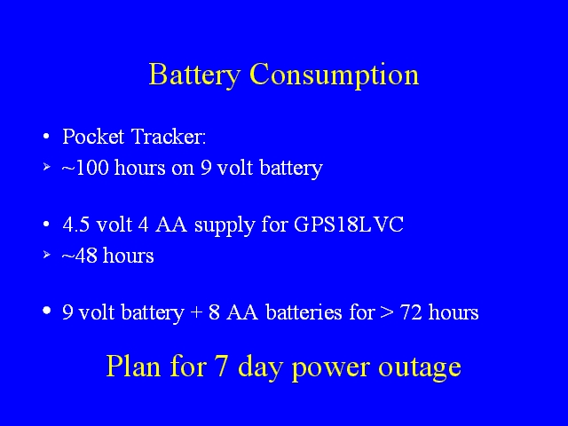

Notes:
With one change of batteries (two 9 volt batteries and 8 AA batteries) this tracker should be able to operate for longer than 72 hours. With transmissions occuring more frequently than once every 10 minutes, additional 9 volt batteries may be needed to obtain this duration. Transmission rate will not affect the lifetime of the AA batteries supplying the GPS.